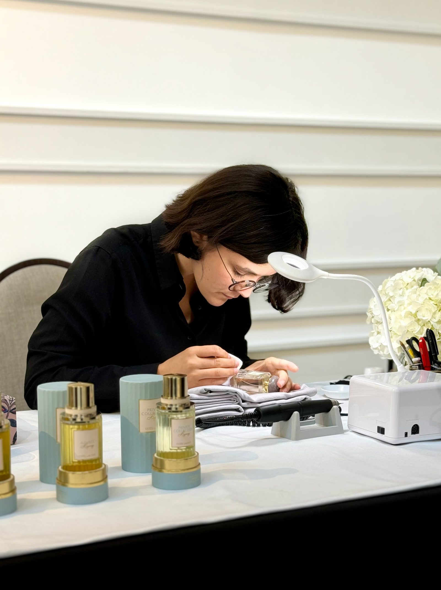
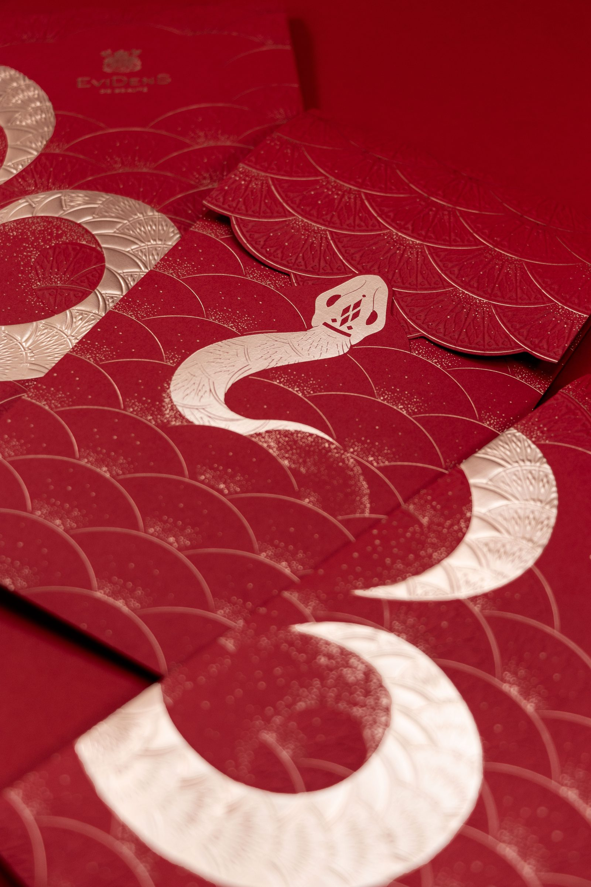

Réalisations
Nos ateliers sur mesure
Retail & évènementiel
Tournés autour de l’art et de l’artisanat français nos Ateliers Sur-Mesure apportent poésie, élégance et sensibilité à chacun de vos projets.
Chaque expérience exclusive est pensée pour vous dans le respect de votre direction artistique et vos attentes.
Nous vous accompagnons de la conception jusqu’à la mise en place de l’animation
Nous portons une attention particulière à la technique, la gestuelle, le set-up pour vous offrir une expérience unique apportant le sentiment d’un privilège.
Une fois la conception finalisée, nous réalisons vos ateliers ou commandes avec nos artistes et artisans qualifiés en France et à l’international.
Pour vos marchés à l’international, nous vous créons des guidelines détaillées pour le déploiement de vos animations.
Réalisation de couronnes de Noël en fleurs et végétaux séchés pour les Xmas Parties 2024 en France.
Création et déploiement d’un atelier strass et calligraphie sur des ornements de Noël mettant en avant la collaboration entre la Maison Guerlain et l’artiste Shourouk.
Réalisation des ateliers retail sur le marché France et création de guidelines à destination des marchés à l’international.
Création et développement d’un atelier sérigraphie mettant en avant les illustrations de Pietro Ruffo pour Christian Dior Parfums.
Réalisation des ateliers retail sur le marché France et création de guidelines à destination des marchés à l’international.
Création d’une animation de composition florale en point de vente.
Création et développement d’un atelier de personnalisation à la peinture pour les Jeux Olympiques de Paris 2024
Réalisation des guidelines retail sur le marché France.
Création d’une sculpture reprenant la rose emblématique de la Maison Dior.
Déploiement sur
Création d’un atelier de personnalisation la feuille d’or argent.
Réalisation des ateliers retail sur le marché France et création de guidelines à destination des marchés à l’international.
